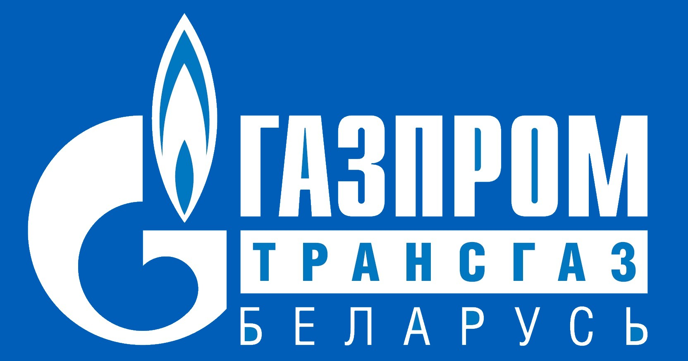
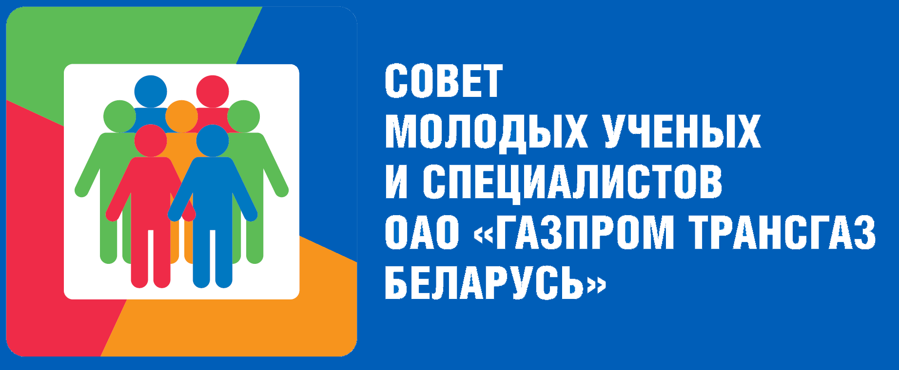
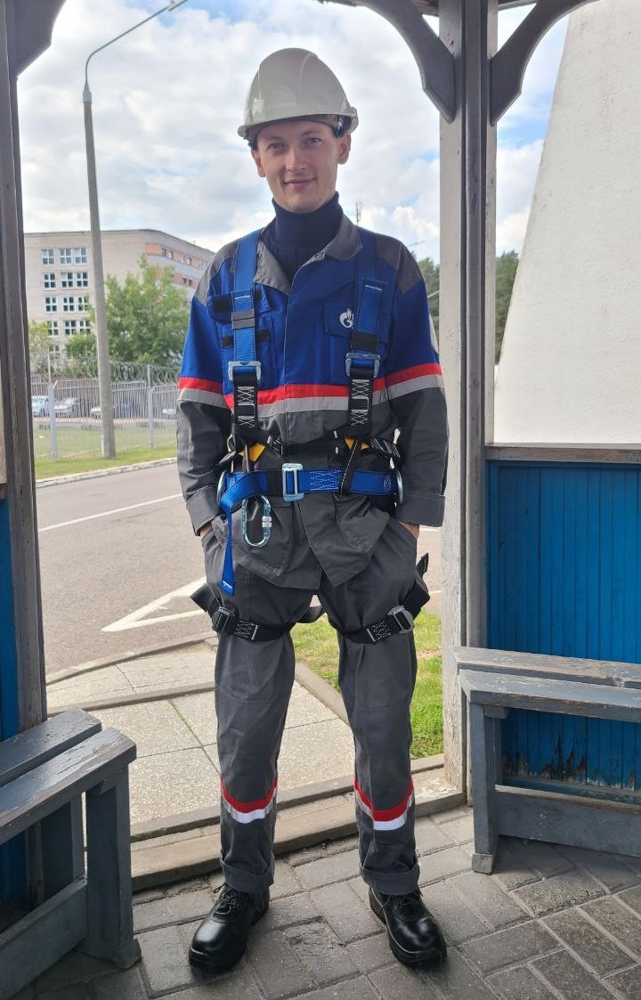

Щерба Вячеслав Александрович
Инженер лаборатории пожарной автоматики и охраны


Образование
- В 2020 году окончил БНТУ ФИТР по специальности промышленные роботы и робототехнические комплексы.
Опыт работы
- Свой трудовой путь начал с мастерской. Параллельно с обучением занимался ремонтом компьютерной техники и электронных устройств.
- В 2019 году попал на практику в лабораторию СПАиО СЦ филиала «Инженерно-технический центр»,
после на преддипломную практику с распределением в ту же лабораторию в 2020 году.
Навыки
- Профессиональные навыки:проектирование систем автоматизации и программирование.
- Личные качества: ответственность, адаптивность, стрессоустойчивость.
Следующая страница
На главную